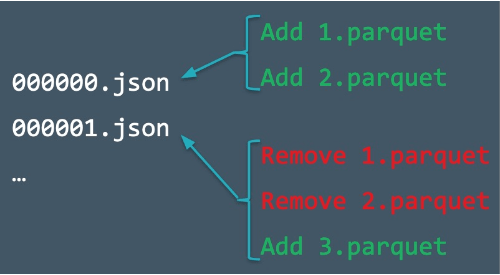
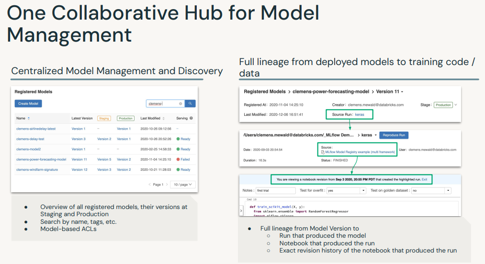
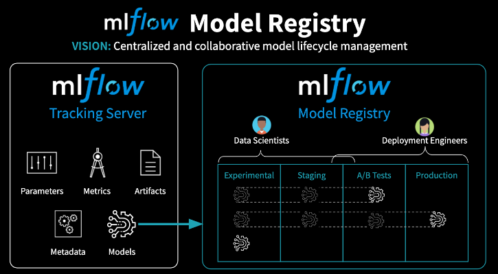

1. Introductory Topics1.1. Spark OverviewApache Spark is founded as a research prooject at UC Berkeley in 2009.It's an open-source unified data analytics engine for big data.It has built-in APIs in SQL, Python, Scala, R, and Java.Spark is a lazy-evaluation engine, i.e., it would only execute if some particular actions are called, e.g., .count(), .show(), etc.It's a distributed computing engine. A Spark Cluster is composed of a Driver node and a bunch of Worker nodes.
How can I access a DataFrame in SQL?df.createOrReplaceTempView("df_temp")For repeated accessdf.cache()Get the number of partitionsdf.rdd.getNumPartitions()Note: When you pull data back to driver (e.g., call .collect(), .toPandas(), etc.), you'll need to be careful of how much data you're bringing back. Otherwise, you might get OOM exceptions.A best practice is explicitly limit the number of records, unless you know your data set is small, before called .collect() or .toPandas().* df.limit(10).toPandas()[Back To Top]1.1.1. What's New in Spark 3.0?Video: Deep Dive into the New Features of Apache Spark 3.0.Spark 3.5. documentationAdaptive Query ExecutionDynamic query optimization that happens in the middle of your query based on runtime statistics.* Dynamically coalesce shuffle partitions* Dynamically switch join strategies* Dynamically optimize skew joinsEnable it with: spark.sql.adaptive.enabled=trueDynamic Partition Pruning (DPP)Avoid partition scanning based on the query results of the other query fragmentsJoin HintsImproved Pandas UDFsType HintsIteratorsPandas Function API (mapInPandas, applyInPandas, etc)And many more! See the migration guide and resources linked above.[Back To Top]1.2. Delta Lake Overview1.2.1. Why Delta Lake?At a glance, Delta Lake is an open-source storage layer that brings both reliability and performance to data lakes. Delta Lake provides: ACID transactions, Scalable metadata handlingUnifies streaming and batch data processingDelta Lakeruns on top of your existing data lake and is fully compatible with Apache Spark APIs. More information here.1.2.2. Create and Query a Delta Table
# First, read the dataset as a Spark DataFramefile_path =f"{DA.paths.datasets}/airbnb/sf-listings/sf-listings-2019-03-06-clean.parquet/"airbnb_df = spark.read.format("parquet").load(file_path)# Converting Spark DataFrame to Delta Tabledbutils.fs.rm(DA.paths.working_dir,True)airbnb_df.write.format("delta").mode("overwrite").save(DA.paths.working_dir)# A Delta directory can also be registered as a table in the metastore.spark.sql(f"CREATE DATABASE IF NOT EXISTS {DA.schema_name}")spark.sql(f"USE {DA.schema_name}")airbnb_df.write.format("delta").mode("overwrite").saveAsTable("delta_review")
Delta supports partitioning.Partitioning puts data with the same value for the partitioned column into its own directory.Operations with a filter on the partitioned column will only read directories that match the filter. This optimization is called partition pruning. Choose partition columns based in the patterns in your data.
1.2.3. Understanding the Transaction LogThe transaction log is key to understanding Delta Lake because it is the common thread that runs through many of its most important features, including ACID transactions, scalable metadata handling, time travel, and more.The Delta Lake transaction log (also known as the DeltaLog) is an ordered record of every transaction that has ever been performed on a Delta Lake table since its inception.What Is the Transaction Log Used For?Single source of truthThe implementation of atomicity on Delta LakeTo learn more about the inner workings of transaction logs see this page.

When a user creates a Delta Lake table, that tables transaction log is automatically created in the _delta_log subdirectory. As s/he makes changes to that table, those changes are recorded as ordered, atomic commits in the transaction log. Each commit is written out as a JSON file, starting with 000000.json. Additional changes to the table generate more JSON files.
The four columns each represent a different part of the very first commit to the Delta Table where the table was created.The add column has statistics about the DataFrame as a whole and individual columns.The commitInfo column has useful information about what the operation was (WRITE or READ) and who executed the operation.The metaData column contains information about the column schema.The protocol version contains information about the minimum Delta version necessary to either write or read to this Delta Table.
Let's take a look at the files inside one of the Neighborhood partitions. The file inside corresponds to the partition commit (file 01) in the _delta_log directory.
# Reading data from Delta tabledf = spark.read.format("delta").load(DA.paths.working_dir)# Updating Delta tabledf_update = airbnb_df.filter(airbnb_df["host_is_superhost"]=="t")df_update.write.format("delta").mode("overwrite").save(DA.paths.working_dir)# Look at the files in the Bayview partition post-update. Remember, the different files in this directory are snapshots of your DataFrame corresponding to different commits.display(dbutils.fs.ls(f"{DA.paths.working_dir}/neighbourhood_cleansed=Bayview/"))
[Back To Top]1.2.4. Delta Time TravelYou can access a previous version of your Delta Table using Delta Time Travel. Use the following code to access your version history. Delta Lake will keep a 30 day version history by default, though it can maintain that history for longer if needed.
You can also access older versions using a timestamp.Replace the timestamp string with the information from your version history. Note that you can use a date without the time information if necessary.
# Use your own timestamp # time_stamp_string = "FILL_IN"# OR programatically get the first verion's timestamp valuetime_stamp_string =str(spark.sql("DESCRIBE HISTORY train_delta").collect()[-1]["timestamp"])df = spark.read.format("delta").option("timestampAsOf", time_stamp_string).load(DA.paths.working_dir)
1.2.5. Cleanup Log FilesWe can clean up our directory using VACUUM. Vacuum accepts a retention period in hours as an input.Uh-oh, our code doesn't run!By default, to prevent accidentally vacuuming recent commits, Delta Lake will not let users vacuum a period under 7 days or 168 hours. Once vacuumed, you cannot return to a prior commit through time travel, only your most recent Delta Table will be saved.Try changing the vacuum parameter to different values.
# from delta.tables import DeltaTable# delta_table = DeltaTable.forPath(spark, DA.paths.working_dir)# delta_table.vacuum(0)
We can workaround this by setting a spark configuration that will bypass the default retention period check.
from delta.tables import DeltaTablespark.conf.set("spark.databricks.delta.retentionDurationCheck.enabled","false")delta_table = DeltaTable.forPath(spark, DA.paths.working_dir)delta_table.vacuum(0)
[Back To Top]2.3. Explore Data with Data ProfileThe Data Profile feature in Databricks notebooks offers valuable insights and benefits for data analysis and exploration. By leveraging Data Profile, users gain a comprehensive overview of their dataset's characteristics, statistics, and data quality metrics. This feature enables data scientists and analysts to understand the data distribution, identify missing values, detect outliers, and explore descriptive statistics efficiently.There are two ways of viewing Data Profiler. The first option is the UI.After using display function to show a data frame, click + icon next to the Table in the header.Click Data Profile.This functionality is also available through the dbutils API in Python, Scala, and R, using the dbutils.data.summarize(df) command. We can also use dbutils.data.summarize(df) to display Data Profile UI.Note: This features will profile the entire data set in the data frame or SQL query results, not just the portion displayed in the table.Note: Running data profile is going to cache some intermediary data. Be careful not to run it on very large datasets. It's just caching the intermediary results though, not the entire data.
dbutils.data.summarize(fixed_price_df)
[Back To Top]2.4. Getting Rid of Extreme ValuesThere's always a possibility that some columns in our data have some extreme values.Note: Deciding on what an extreme value should be is domain-specific. For example, in this example data, the house prices could include the price of some super-expensive homes.2.5. Handling Null ValuesThere are a lot of different ways to handle null values. Sometimes, null can actually be a key indicator of the thing you are trying to predict (e.g. if you don't fill in certain portions of a form, probability of it getting approved decreases).Some ways to handle nulls:Drop any records that contain nullsNumeric:* Replace them with mean/median/zero/etc.Categorical:* Replace them with the mode* Create a special category for nullUse techniques like ALS (Alternating Least Squares) which are designed to impute missing values.Note: If you do ANY imputation techniques for categorical/numerical features, you MUST include an additional field specifying that field was imputed.Note:SparkML's Imputer (shown below) does not support imputation for categorical features.Impute Cast to DoubleImputing in the context of data means replacing missing values with something intentional, such as replacing nulls with an average/mean value. SparkML's Imputer requires all fields to be of type double. Let's cast all integer fields to double.
from pyspark.sql.functions import colfrom pyspark.sql.types import IntegerTypeinteger_columns =[x.name for x in min_nights_df.schema.fields if x.dataType == IntegerType()]doubles_df = min_nights_dffor c in integer_columns: doubles_df = doubles_df.withColumn(c, col(c).cast("double"))columns ="\n - ".join(integer_columns)print(f"Columns converted from Integer to Double:\n - {columns}")# Columns converted from Integer to Double:# - host_total_listings_count# - accommodates# - bedrooms# - beds# - minimum_nights# - number_of_reviews# - review_scores_rating# - review_scores_accuracy# - review_scores_cleanliness# - review_scores_checkin# - review_scores_communication# - review_scores_location# - review_scores_value# ------------# Add a dummy column to denote the presence of null values before imputing (i.e. 1.0 = Yes, 0.0 = No).from pyspark.sql.functions import whenimpute_cols =["bedrooms","bathrooms","beds","review_scores_rating","review_scores_accuracy","review_scores_cleanliness","review_scores_checkin","review_scores_communication","review_scores_location","review_scores_value"]for c in impute_cols: doubles_df = doubles_df.withColumn(c +"_na", when(col(c).isNull(),1.0).otherwise(0.0))
[Back To Top]2.6. Transformers and EstimatorsSpark ML standardizes APIs for machine learning algorithms to make it easier to combine multiple algorithms into a single pipeline, or workflow. Let's cover two key concepts introduced by the Spark ML API: transformers and estimators.Transformer Transforms one DataFrame into another DataFrame. It accepts a DataFrame as input, and returns a new DataFrame with one or more columns appended to it. Transformers do not learn any parameters from your data and simply apply rule-based transformations. It has a .transform() method.Estimator An algorithm which can be fit on a DataFrame to produce a Transformer. E.g., a learning algorithm is an Estimator which trains on a DataFrame and produces a model. It has a .fit() method because it learns (or "fits") parameters from your DataFrame.
from pyspark.ml.feature import Imputerimputer = Imputer(strategy="median", inputCols=impute_cols, outputCols=impute_cols)imputer_model = imputer.fit(doubles_df)imputed_df = imputer_model.transform(doubles_df)# Now, let's save the cleansed dataimputed_df.write.format("delta").mode("overwrite").save(f"{DA.paths.working_dir}/imputed_results")
3. Linear RegressionLinear regression assumptions:Linearity Linear relationship between X and the mean of Y .Independence Observations are independent from one another i.e., little or no autocorrelation.* You can plot ACF plot of residuals to check the autocorrelation in data.* * Alternatively, you can use Durbin-Watson (DW) Test.* Tt=2((et-et-1)2)/Tt=1e2tNormalityY is normally distributed for any fixed observation.* To check the normality use the q-q plot we can infer if the data comes from a normal distribution.* Homoscedasticity The variance of the residuals is the same for any feature.* Homoscedasticity describes a situation in which the error term ( the noise or random disturbance in the relationship between the independent and the target) is the same across all values of the independent variables. * A scatter plot of residual values vs predicted values is a good way to check for homoscedasticity.* If the variance of the residual is symmetrically distributed across the residual line then data is said to be homoscedastic.
Spark Machine Learning LibrariesMLlib* Original ML API for Spark* Based on RDDs* Maintenance modeSpark ML* Newer ML API for Spark* Based on DataFrames[Back To Top]3.1. Implementation - Predicting Rental PriceWe'll use the Airbnb data to predict rental prices in San Francisco.We're going to use Vector Assembler from Spark to create our feature vectors.3.1.1. Vector AssemblerThe linear regression estimator (.fit()) expects a column of Vector type as input.VectorAssembler is an example of a transformer. Transformers take in a DataFrame, and return a new DataFrame with one or more columns appended to it. They do not learn from your data, but apply rule based transformations.More on this here.
# Read the datafile_path =f"{DA.paths.datasets}/airbnb/sf-listings/sf-listings-2019-03-06-clean.delta/"airbnb_df = spark.read.format("delta").load(file_path)# Train and test data split# It's necessary to set the seed number. What happens if I change my cluster configuration?train_df, test_df = airbnb_df.randomSplit([.8,.2], seed=42)# Change the number of partitions (to simulate a different cluster configuration).# Let's check if we get the same number of data points in our training set.train_repartition_df, test_repartition_df =(airbnb_df.repartition(24).randomSplit([.8,.2], seed=42))# A simple regression modelfrom pyspark.ml.regression import LinearRegressionfrom pyspark.ml.feature import VectorAssemblervec_assembler = VectorAssembler(inputCols=["bedrooms"], outputCol="features")vec_train_df = vec_assembler.transform(train_df)lr = LinearRegression(featuresCol="features", labelCol="price")lr_model = lr.fit(vec_train_df)# Inspect the modelm = lr_model.coefficients[0]b = lr_model.interceptprint(f"The formula for the linear regression line is y = {m:.2f}x + {b:.2f}")# The formula for the linear regression line is y = 123.54x + 50.09# Predictvec_test_df = vec_assembler.transform(test_df)pred_df = lr_model.transform(vec_test_df)pred_df.select("bedrooms","features","price","prediction").show()# +--------+--------+-----+------------------+# |bedrooms|features|price| prediction|# +--------+--------+-----+------------------+# | 1.0| [1.0]| 86.0|173.63467134146967|# | 1.0| [1.0]|190.0|173.63467134146967|# | 1.0| [1.0]|100.0|173.63467134146967|# | 2.0| [2.0]|325.0| 297.1745644790371|# | 1.0| [1.0]|200.0|173.63467134146967|# | 1.0| [1.0]|200.0|173.63467134146967|# | 0.0| [0.0]| 80.0|50.094778203902216|# | 1.0| [1.0]|160.0|173.63467134146967|# | 0.0| [0.0]|132.0|50.094778203902216|# | 1.0| [1.0]|100.0|173.63467134146967|# | 1.0| [1.0]|165.0|173.63467134146967|# | 1.0| [1.0]| 90.0|173.63467134146967|# | 1.0| [1.0]| 73.0|173.63467134146967|# | 0.0| [0.0]|119.0|50.094778203902216|# | 1.0| [1.0]| 80.0|173.63467134146967|# | 1.0| [1.0]| 84.0|173.63467134146967|# | 1.0| [1.0]|119.0|173.63467134146967|# Evaluate the modelfrom pyspark.ml.evaluation import RegressionEvaluatorregression_evaluator = RegressionEvaluator(predictionCol="prediction", labelCol="price", metricName="rmse")rmse = regression_evaluator.evaluate(pred_df)print(f"RMSE is {rmse}")# RMSE is 149.54529126695462
[Back To Top]3.2. Improve the Model Performance3.2.1. Categorical VariablesThere are a few ways to handle categorical features:Assign them a numeric valueCreate "dummy" variables a.k.a. One-Hot EncodingGenerate Embeddings mainly used for textual dataOne-Hot EncoderSpark doesn't have a dummies function, and OHE is a two-step process. * First, we need to use StringIndexer to map a string column of labels to an ML column of label indices.* Then, we can apply the OneHotEncoder to the output of the StringIndexer.*
from pyspark.ml.feature import OneHotEncoder, StringIndexercategorical_cols =[field for(field, dataType)in train_df.dtypes if dataType =="string"]index_output_cols =[x +"Index"for x in categorical_cols]ohe_output_cols =[x +"OHE"for x in categorical_cols]string_indexer = StringIndexer(inputCols=categorical_cols, outputCols=index_output_cols, handleInvalid="skip")ohe_encoder = OneHotEncoder(inputCols=index_output_cols, outputCols=ohe_output_cols)# -----------from pyspark.ml.feature import VectorAssemblernumeric_cols =[field for(field, dataType)in train_df.dtypes if((dataType =="double")&(field !="price"))]assembler_inputs = ohe_output_cols + numeric_colsvec_assembler = VectorAssembler(inputCols=assembler_inputs, outputCol="features")# -----------from pyspark.ml.regression import LinearRegressionlr = LinearRegression(labelCol="price", featuresCol="features")
We're going to put all these stages in a Pipeline.A Pipeline is a way of organizing all of our transformers and estimators.This way, we don't have to worry about remembering the same ordering of transformations to apply to our test dataset.
from pyspark.ml import Pipelinestages =[string_indexer, ohe_encoder, vec_assembler, lr]pipeline = Pipeline(stages=stages)pipeline_model = pipeline.fit(train_df)# We can save our models to persistent storage (e.g. DBFS) in case our cluster goes down so we don't have to recompute our results.pipeline_model.write().overwrite().save(DA.paths.working_dir)# Load the saved model# Note: When you load in models, you need to know the type of model you are loading back in. For this reason, we recommend you always put your transformers/estimators into a Pipeline, so you can always load the generic PipelineModel back in.from pyspark.ml import PipelineModelsaved_pipeline_model = PipelineModel.load(DA.paths.working_dir)# Predictpred_df = saved_pipeline_model.transform(test_df)display(pred_df.select("features","price","prediction"))# +--------------------+-----+------------------+# | features|price| prediction|# +--------------------+-----+------------------+# |(99,[0,3,6,12,43,...| 86.0| 42.87569095191793|# |(99,[0,3,6,11,45,...|190.0|207.79857051348517|# |(99,[0,3,6,28,42,...|100.0| 66.44237123080529|# |(99,[0,3,6,19,43,...|325.0|310.55147643214514|# |(99,[0,3,6,17,43,...|200.0| 14.25784629349073|# |(99,[0,3,6,14,42,...|200.0| 159.0941630804955|# |(99,[0,3,6,24,43,...| 80.0|-19.64792436422431|# |(99,[0,3,6,23,42,...|160.0|161.33811082075044|# |(99,[0,3,6,9,42,6...|132.0|112.37330010167352|# |(99,[0,3,6,9,44,6...|100.0| 215.7629068979477|# |(99,[0,3,6,9,45,6...|165.0|196.11129860923393|# |(99,[0,3,6,37,43,...| 90.0| 52.21644740317788|# |(99,[0,3,6,33,42,...| 73.0| 36.60153688950595|# |(99,[0,3,6,7,42,6...|119.0| 121.3226976055521|# |(99,[0,3,6,30,43,...| 80.0|62.285560607011575|# |(99,[0,3,6,23,42,...| 84.0|263.08656705308385|# |(99,[0,3,6,16,42,...|119.0| 168.0405324674648|# Evaluate the modelfrom pyspark.ml.evaluation import RegressionEvaluatorregression_evaluator = RegressionEvaluator(predictionCol="prediction", labelCol="price", metricName="rmse")rmse = regression_evaluator.evaluate(pred_df)r2 = regression_evaluator.setMetricName("r2").evaluate(pred_df)print(f"RMSE is {rmse}")print(f"R2 is {r2}")# RMSE is 133.4629525945939# R2 is 0.4416148762122888
4. MLflowOpen-source platform for ML lifecycleOperationalizing machine learningDeveloped by DatabricksPre-installed on the Databricks Runtime for MLCore ML IssuesKeeping track of experiments or model developmentReproducing codeComparing modelsStandardization of packaging and deploying models MLflow addresses these issues.[Back To Top]4.1. MLflow TrackingMLflow seeks to address these three core issues:Its difficult to keep track of experiments.Its difficult to reproduce code.Theres no standard way to package and deploy models.MLflow Tracking is a logging API specific for machine learning and agnostic to libraries and environments that do the training. It is organized around the concept of runs, which are executions of data science code. Runs are aggregated into experiments where many runs can be a part of a given experiment and an MLflow server can host many experiments.You can use mlflow.set_experiment() to set an experiment, but if you do not specify an experiment, it will automatically be scoped to this notebook.Track Runs Each run can record the following information:Parameters: Key-value pairs of input parameters such as the number of trees in a random forest modelMetrics: Evaluation metrics such as RMSE or Area Under the ROC CurveArtifacts: Arbitrary output files in any format. This can include images, pickled models, and data filesSource: The code that originally ran the experiment.Note: For Spark models, MLflow can only log PipelineModels.
Now, we can query past runs either through the UI or the MLflow API.[Back To Top]4.1.1. Querying Past Runs ProgrammaticallyYou can query past runs programmatically in order to use this data back in Python. The pathway to doing this is an MlflowClient object.
from mlflow.tracking import MlflowClientclient = MlflowClient()display(client.search_experiments())
You can also use search_runs (documentation) to find all runs for a given experiment.
[Back To Top]4.1.2. View Past Runs Using MLflow UIGo to the "Experiments" page and click on the experiment that you want to view.Examine the following experiment details using the UI:The Experiment IDThe artifact location This is where the artifacts are stored in DBFS.Table ViewYou can customize the table view which lists all runs for the experiment. For example, you can show/hide rmse or features columns.Following details can be found on the Experiment list page:* Run Name This is the run name is used while logging the run. Click on the name to view details of the run. See steps below for more details about run page.* Duration This shows the elapsed time for each run.* Source This is the notebook that created this run.* Model This column shows the model type.After clicking on the time of the run, take a look at the following:* The Run ID will match what we printed above* The model that we saved, as well as the Conda environment and the MLmodel file.* scikit-learn models will have a pickled version of the model. As in the code below we are using SparkML, no pickled version of the model is logged.Note: that you can add notes under the "Description" tab to help keep track of important information about your models.Also, click on the run for the log normal distribution and see that the histogram is saved in "Artifacts".Chart ViewChart view allows you to compare runs by features and evaluation metric. You can use various charts, such as bar chart or scatter plot chart, to visually compare experiment runs.[Back To Top]4.2. MLflow Model RegistryMLflow Model Registry is a: Collaborative, centralized model hubFacilitate experimentation, testing, and productionIntegrate with approval and governance workflowsMonitor ML deployments and their performanceRead moreNote: If you would like to set up a model serving endpoint, you will need cluster creation permissions.

The MLflow Model Registry component is a centralized model store, set of APIs, and UI, to collaboratively manage the full lifecycle of an MLflow Model. It provides: model lineage which MLflow Experiment and Run produced the model model versioningstage transitions e.g. from staging to productionannotations e.g. with comments, tags deployment management e.g. which production jobs have requested a specific model versionMLflow Model Registry has the following features:Central Repository Register MLflow models with the MLflow Model Registry. * A registered model has a unique name, version, stage, and other metadata.Model Versioning Automatically keep track of versions for registered models when updated.Model Stage Assigned preset or custom stages to each model version, like Staging and Production to represent the lifecycle of a model.Model Stage Transitions Record new registration events or changes as activities that automatically log users, changes, and additional metadata such as comments.CI/CD Workflow Integration Record stage transitions, request, review and approve changes as part of CI/CD pipelines for better control and governance.See MLflow docs for more info.

[Back To Top]4.2.1. Registering a ModelNote: The following workflow will work with either the UI or in pure Python. For the UI, go to the "Models" section from the sidebar.AutologgingTrain a model and log it to MLflow using autologging. Autologging allows you to log metrics, parameters, and models without the need for explicit log statements.There are a few ways to use autologging:* Call mlflow.autolog() before your training code. This will enable autologging for each supported library you have installed as soon as you import it.* Enable autologging at the workspace level from the admin console.* Use library-specific autolog calls for each library you use in your code (e.g. mlflow.spark.autolog()).*
import mlflowimport mlflow.sklearnfrom mlflow.models.signature import infer_signatureimport pandas as pdfrom sklearn.linear_model import LinearRegressionfrom sklearn.metrics import mean_squared_errorfrom sklearn.model_selection import train_test_splitdf = pd.read_csv(f"{DA.paths.datasets}/airbnb/sf-listings/airbnb-cleaned-mlflow.csv".replace("dbfs:/","/dbfs/"))# convert ineteger fields to double in case of missing values, which would cause errorint_cols = df.select_dtypes(include='int64').columnsdf[int_cols]= df[int_cols].astype('float64')X_train, X_test, y_train, y_test = train_test_split(df.drop(["price"], axis=1), df[["price"]].values.ravel(), random_state=42)with mlflow.start_run(run_name="LR Model")as run: mlflow.sklearn.autolog(log_input_examples=True, log_model_signatures=True, log_models=True) lr = LinearRegression() lr.fit(X_train, y_train) signature = infer_signature(X_train, lr.predict(X_train))# Create a unique model namesuffix = DA.unique_name("-")model_name =f"sklearn-lr_{suffix}"# Register the modelrun_id = run.info.run_idmodel_uri =f"runs:/{run_id}/model"model_details = mlflow.register_model(model_uri=model_uri, name=model_name)# Successfully registered model 'sklearn-lr_class-023-5lht-da-sml'.# 2023/12/05 17:01:29 INFO mlflow.tracking._model_registry.client: Waiting up to 300 seconds for model version to finish creation. Model name: sklearn-lr_class-023-5lht-da-sml, version 1# Created version '1' of model 'sklearn-lr_class-023-5lht-da-sml'.# ------# Check the statusfrom mlflow.tracking.client import MlflowClientclient = MlflowClient()model_version_details = client.get_model_version(name=model_name, version=1)model_version_details.status# 'READY'# ------# Add a model descriptionclient.update_registered_model( name=model_details.name, description="This model forecasts Airbnb housing list prices based on various listing inputs.")# <RegisteredModel: creation_timestamp=1701795688743, description=('This model forecasts Airbnb housing list prices based on various listing '# 'inputs.'), last_updated_timestamp=1701795773103, latest_versions=[], name='sklearn-lr_class-023-5lht-da-sml', tags={}># ------# Add a version-specific descriptionclient.update_model_version( name=model_details.name, version=model_details.version, description="This model version was built using OLS linear regression with sklearn.")# <ModelVersion: creation_timestamp=1701795689048, current_stage='None', description='This model version was built using OLS linear regression with sklearn.', last_updated_timestamp=1701795774300, name='sklearn-lr_class-023-5lht-da-sml', run_id='d1fb1a414c9346bd8dddc8eba3cf3ff6', run_link='', source='dbfs:/databricks/mlflow-tracking/4470712829972569/d1fb1a414c9346bd8dddc8eba3cf3ff6/artifacts/model', status='READY', status_message='', tags={}, user_id='8998376680594099', version='1'>
[Back To Top]4.2.2. Deploying a ModelThe MLflow Model Registry defines several model stages: NoneStagingProduction ArchivedEach stage has a unique meaning. For example, Staging is meant for model testing, while Production is for models that have completed the testing or review processes and have been deployed to applications.Users with appropriate permissions can transition models between stages.
# Transition model to 'Production' stageclient.transition_model_version_stage( name=model_details.name, version=model_details.version, stage="Production")# <ModelVersion: creation_timestamp=1701795689048, current_stage='Production', description='This model version was built using OLS linear regression with sklearn.', last_updated_timestamp=1701796040587, name='sklearn-lr_class-023-5lht-da-sml', run_id='d1fb1a414c9346bd8dddc8eba3cf3ff6', run_link='', source='dbfs:/databricks/mlflow-tracking/4470712829972569/d1fb1a414c9346bd8dddc8eba3cf3ff6/artifacts/model', status='READY', status_message='', tags={}, user_id='8998376680594099', version='1'># ------# Fetch the model's current statusmodel_version_details = client.get_model_version( name=model_details.name, version=model_details.version)print(f"The current model stage is: '{model_version_details.current_stage}'")# The current model stage is: 'Production'# --------# Fetch the latest model using a `pyfunc`. # Loading the model in this way allows us to use the model regardless of the package that was used to train it.# You can load a specific version of the model too.import mlflow.pyfuncmodel_version_uri =f"models:/{model_name}/1"print(f"Loading registered model version from URI: '{model_version_uri}'")model_version_1 = mlflow.pyfunc.load_model(model_version_uri)# Loading registered model version from URI: 'models:/sklearn-lr_class-023-5lht-da-sml/1'# ----------# Predictmodel_version_1.predict(X_test)
[Back To Top]4.2.3. Deploying a New Model VersionThe MLflow Model Registry enables you to create multiple model versions corresponding to a single registered model. By performing stage transitions, you can seamlessly integrate new model versions into your staging or production environments.
# Create a new model version and register that model when it's loggedfrom sklearn.linear_model import Ridgewith mlflow.start_run(run_name="LR Ridge Model")as run: alpha =.9 ridge_regression = Ridge(alpha=alpha) ridge_regression.fit(X_train, y_train)# Specify the `registered_model_name` parameter of the `mlflow.sklearn.log_model()`# function to register the model with the MLflow Model Registry. This automatically# creates a new model version mlflow.sklearn.log_model( sk_model=ridge_regression, artifact_path="sklearn-ridge-model", registered_model_name=model_name,) mlflow.log_params(ridge_regression.get_params()) mlflow.log_metric("mse", mean_squared_error(y_test, ridge_regression.predict(X_test)))# Registered model 'sklearn-lr_class-023-5lht-da-sml' already exists. Creating a new version of this model...# 2023/12/05 17:11:32 INFO mlflow.tracking._model_registry.client: Waiting up to 300 seconds for model version to finish creation. Model name: sklearn-lr_class-023-5lht-da-sml, version 2# Created version '2' of model 'sklearn-lr_class-023-5lht-da-sml'.# -----------# Put the new model into stagingclient.transition_model_version_stage( name=model_details.name, version=2, stage="Staging")# <ModelVersion: creation_timestamp=1701796291978, current_stage='Staging', description='', last_updated_timestamp=1701796335048, name='sklearn-lr_class-023-5lht-da-sml', run_id='97dc42f9ff304db883fb43527e37fe8f', run_link='', source='dbfs:/databricks/mlflow-tracking/4470712829972569/97dc42f9ff304db883fb43527e37fe8f/artifacts/sklearn-ridge-model', status='READY', status_message='', tags={}, user_id='8998376680594099', version='2'># --------# Use the search functionality to grab the latest model versionmodel_version_infos = client.search_model_versions(f"name = '{model_name}'")new_model_version =max([model_version_info.version for model_version_info in model_version_infos])# Update a Deployed Modelclient.update_model_version( name=model_name, version=new_model_version, description=f"This model version is a ridge regression model with an alpha value of {alpha} that was trained in scikit-learn.")# <ModelVersion: creation_timestamp=1701796291978, current_stage='Staging', description=('This model version is a ridge regression model with an alpha value of 0.9 '# 'that was trained in scikit-learn.'), last_updated_timestamp=1701797052271, name='sklearn-lr_class-023-5lht-da-sml', run_id='97dc42f9ff304db883fb43527e37fe8f', run_link='', source='dbfs:/databricks/mlflow-tracking/4470712829972569/97dc42f9ff304db883fb43527e37fe8f/artifacts/sklearn-ridge-model', status='READY', status_message='', tags={}, user_id='8998376680594099', version='2'># ----------# Since this model is now in staging, you can execute an automated CI/CD pipeline against it to test it before going into production. Once that is completed, you can push that model into production.client.transition_model_version_stage( name=model_name, version=new_model_version, stage="Production", archive_existing_versions=True# Archive existing model in production )# <ModelVersion: creation_timestamp=1701796291978, current_stage='Production', description=('This model version is a ridge regression model with an alpha value of 0.9 '# 'that was trained in scikit-learn.'), last_updated_timestamp=1701797101377, name='sklearn-lr_class-023-5lht-da-sml', run_id='97dc42f9ff304db883fb43527e37fe8f', run_link='', source='dbfs:/databricks/mlflow-tracking/4470712829972569/97dc42f9ff304db883fb43527e37fe8f/artifacts/sklearn-ridge-model', status='READY', status_message='', tags={}, user_id='8998376680594099', version='2'># --------# Deleting a model# Note: You cannot delete a model that is not first Archived.client.transition_model_version_stage( name=model_name, version=2, stage="Archived")client.delete_registered_model(model_name)
Question: How does MLflow tracking differ from the model registry?Answer: Tracking is meant for experimentation and development. The model registry is designed to take a model from tracking and put it through staging and into production. This is often the point that a data engineer or a machine learning engineer takes responsibility for the deployment process.Question: Why do I need a model registry?Answer: Just as MLflow tracking provides end-to-end reproducibility for the machine learning training process, a model registry provides reproducibility and governance for the deployment process. Since production systems are mission critical, components can be isolated with ACL's so only specific individuals can alter production models. Version control and CI/CD workflow integration is also a critical dimension of deploying models into production.Question: What can I do programmatically versus using the UI?Answer: Most operations can be done using the UI or in pure Python. A model must be tracked using Python, but from that point on everything can be done either way. For instance, a model logged using the MLflow tracking API can then be registered using the UI and can then be pushed into production.[Back To Top]
5. Non-linear Models5.1. Decision TreesIn this section, we're going to build a decision tree model using SparkML.5.1.1. How to Handle Categorical Features?We saw previously that we can use StringIndexer/OneHotEncoder/VectorAssembler or RFormula.However, for decision trees, and in particular, random forests, we should not OHE our variables.There is an excellent blog on this, and the essence is:"One-hot encoding categorical variables with high cardinality can cause inefficiency in tree-based methods. Continuous variables will be given more importance than the dummy variables by the algorithm, which will obscure the order of feature importance and can result in poorer performance."
from pyspark.ml.feature import StringIndexercategorical_cols =[field for(field, dataType)in train_df.dtypes if dataType =="string"]index_output_cols =[x +"Index"for x in categorical_cols]string_indexer = StringIndexer(inputCols=categorical_cols, outputCols=index_output_cols, handleInvalid="skip")from pyspark.ml.feature import VectorAssembler# Filter for just numeric columns (and exclude price, our label)numeric_cols =[field for(field, dataType)in train_df.dtypes if((dataType =="double")&(field !="price"))]# Combine output of StringIndexer defined above and numeric columnsassembler_inputs = index_output_cols + numeric_colsvec_assembler = VectorAssembler(inputCols=assembler_inputs, outputCol="features")from pyspark.ml.regression import DecisionTreeRegressordt = DecisionTreeRegressor(labelCol="price")# Fit the pipelinefrom pyspark.ml import Pipeline# Combine stages into pipelinestages =[string_indexer, vec_assembler, dt]pipeline = Pipeline(stages=stages)# Uncomment to perform fitpipeline_model = pipeline.fit(train_df)
[Back To Top]5.1.2. maxBinsWhat is this parameter maxBins? Let's take a look at the PLANET implementation of distributed decision trees to help explain the maxBins parameter.In Spark, data is partitioned by row. So when it needs to make a split, each worker has to compute summary statistics for every feature for each split point. Then these summary statistics have to be aggregated (via tree reduce) for a split to be made.Think about it: What if worker 1 had the value 32 but none of the others had it. How could you communicate how good of a split that would be?So, Spark has a maxBins parameter for discretizing continuous variables into buckets, but the number of buckets has to be as large as the categorical variable with the highest cardinality.
# Let's increase the maxBins and run the pipeline againdt.setMaxBins(40)pipeline_model = pipeline.fit(train_df)
import pandas as pdfeatures_df = pd.DataFrame(list(zip(vec_assembler.getInputCols(), dt_model.featureImportances)), columns=["feature","importance"])features_df
Why so few features are non-zero?With SparkML, the default maxDepth is 5, so there are only a few features we could consider (we can also split on the same feature many times at different split points).Let's use a Databricks widget to get the top-K features.
5.1.4. Scale InvariantWith decision trees, the scale of the features does not matter. For example, it will split 1/3 of the data if that split point is 100 or if it is normalized to be .33. The only thing that matters is how many data points fall left and right of that split point - not the absolute value of the split point.This is not true for linear regression, and the default in Spark is to standardize first. Think about it: If you measure shoe sizes in American vs European sizing, the corresponding weight of those features will be very different even those those measures represent the same thing: the size of a person's foot!5.1.5. Prediction
5.1.6. PitfallWhat if we get a massive Airbnb rental? It was 20 bedrooms and 20 bathrooms. What will a decision tree predict?It turns out decision trees cannot predict any values larger than they were trained on. The max value in our training set was $10,000, so we can't predict any values larger than that.
from pyspark.ml.evaluation import RegressionEvaluatorregression_evaluator = RegressionEvaluator(predictionCol="prediction", labelCol="price", metricName="rmse")rmse = regression_evaluator.evaluate(pred_df)r2 = regression_evaluator.setMetricName("r2").evaluate(pred_df)print(f"RMSE is {rmse}")print(f"R2 is {r2}")# RMSE is 409.3381256547409# R2 is -4.252629588332073
[Back To Top]5.2. Random Forests and Hyperparameter TuningIn this section, we are going to look at how to tune random forests using grid search and cross validation in order to find the optimal hyperparameters. Using the Databricks Runtime for ML, MLflow automatically logs metrics of all your experiments with the SparkML cross-validator as well as the best fit model!Let's start by building the model pipeline:
[Back To Top]5.2.1. ParamGridNote: To get the list of hyperparameters run rf.explainParams()There are a lot of hyperparameters we could tune, and it would take a long time to manually configure.Instead of a manual (ad-hoc) approach, let's use Spark's ParamGridBuilder to find the optimal hyperparameters in a more systematic approach.Let's define a grid of hyperparameters to test:maxDepth max depth of each decision tree (Use the values 2, 5)numTrees number of decision trees to train (Use the values 5, 10)addGrid() accepts the name of the parameter (e.g. rf.maxDepth), and a list of the possible values (e.g. [2, 5]).
from pyspark.ml.tuning import ParamGridBuilderparam_grid =(ParamGridBuilder().addGrid(rf.maxDepth,[2,5]).addGrid(rf.numTrees,[5,10]).build())
[Back To Top]5.2.2. Cross ValidationWe are also going to use 3-fold cross validation to identify the optimal hyperparameters.We pass in the estimator (pipeline), evaluator, and estimatorParamMaps to CrossValidator so that it knows:Which model to useHow to evaluate the modelWhat hyperparameters to set for the modelWe can also set the number of folds we want to split our data into (3), as well as setting a seed so we all have the same split in the data.
Question: Should we put the pipeline in the cross validator, or the cross validator in the pipeline?It depends if there are estimators or transformers in the pipeline.If you have things like StringIndexer (an estimator) in the pipeline, then you have to refit it every time if you put the entire pipeline in the cross validator.However, if there is any concern about data leakage from the earlier steps, the safest thing is to put the pipeline inside the CV, not the other way. * CV first splits the data and then .fit() the pipeline. * If it is placed at the end of the pipeline, we potentially can leak the info from hold-out set to train set.
In the current method, only one MLflow run is logged, whereas in the previous method, five runs were logged. This is because, in the first method, the pipeline was placed within the CrossValidator, which automatically logs all runs. However, in the second method, since the pipeline only returns the best model without evaluating metrics, only that single model is seen. Additionally, no evaluation metrics are logged. Essentially, the Pipeline logs all stages and directly returns the best model without performing model evaluations.
# model with the best hyperparameter configurationlist(zip(cv_model.getEstimatorParamMaps(), cv_model.avgMetrics))# [({Param(parent='RandomForestRegressor_401a5f438e22', name='maxDepth', doc='Maximum depth of the tree. (>= 0) E.g., depth 0 means 1 leaf node; depth 1 means 1 internal node + 2 leaf nodes. Must be in range [0, 30].'): 2,# Param(parent='RandomForestRegressor_401a5f438e22', name='numTrees', doc='Number of trees to train (>= 1).'): 5},# 280.13676707305024),# ({Param(parent='RandomForestRegressor_401a5f438e22', name='maxDepth', doc='Maximum depth of the tree. (>= 0) E.g., depth 0 means 1 leaf node; depth 1 means 1 internal node + 2 leaf nodes. Must be in range [0, 30].'): 2,# Param(parent='RandomForestRegressor_401a5f438e22', name='numTrees', doc='Number of trees to train (>= 1).'): 10},# 280.00286295955465),# ({Param(parent='RandomForestRegressor_401a5f438e22', name='maxDepth', doc='Maximum depth of the tree. (>= 0) E.g., depth 0 means 1 leaf node; depth 1 means 1 internal node + 2 leaf nodes. Must be in range [0, 30].'): 5,# Param(parent='RandomForestRegressor_401a5f438e22', name='numTrees', doc='Number of trees to train (>= 1).'): 5},# 287.9329709115638),# ({Param(parent='RandomForestRegressor_401a5f438e22', name='maxDepth', doc='Maximum depth of the tree. (>= 0) E.g., depth 0 means 1 leaf node; depth 1 means 1 internal node + 2 leaf nodes. Must be in range [0, 30].'): 5,# Param(parent='RandomForestRegressor_401a5f438e22', name='numTrees', doc='Number of trees to train (>= 1).'): 10},# 294.6576018771978)]
# Predictions are outperforming the decision tree modelpred_df = pipeline_model.transform(test_df)rmse = evaluator.evaluate(pred_df)r2 = evaluator.setMetricName("r2").evaluate(pred_df)print(f"RMSE is {rmse}")print(f"R2 is {r2}")# RMSE is 143.06124338029716# R2 is 0.35841179228176656
6. HyperoptHyperopt is a Python library for "serial and parallel optimization over awkward search spaces, which may include real-valued, discrete, and conditional dimensions".In the machine learning workflow, hyperopt can be used to distribute/parallelize the hyperparameter optimization process with more advanced optimization strategies than are available in other libraries.Hyperopt paper.There are two ways to scale hyperopt with Apache Spark:Use single-machine hyperopt with a distributed training algorithm (e.g. MLlib)Use distributed hyperopt with single-machine training algorithms (e.g. scikit-learn) with the SparkTrials class.In this lesson, we will use single-machine hyperopt with MLlib, but in the lab, you will see how to use hyperopt to distribute the hyperparameter tuning of single node models.Unfortunately, you cant use hyperopt to distribute the hyperparameter optimization for distributed training algorithims at this time. However, you do still get the benefit of using more advanced hyperparameter search algorthims (random search, TPE, etc.) with Spark ML.Resources:DocumentationHyperopt on DatabricksHyperparameter Tuning with MLflow, Apache Spark MLlib and HyperoptHow (Not) to Tune Your Model With Hyperopt
# Load the data and build the model pipelinefile_path =f"{DA.paths.datasets}/airbnb/sf-listings/sf-listings-2019-03-06-clean.delta/"airbnb_df = spark.read.format("delta").load(file_path)train_df, val_df, test_df = airbnb_df.randomSplit([.6,.2,.2], seed=42)from pyspark.ml.feature import StringIndexer, VectorAssemblerfrom pyspark.ml import Pipelinefrom pyspark.ml.regression import RandomForestRegressorfrom pyspark.ml.evaluation import RegressionEvaluatorcategorical_cols =[field for(field, dataType)in train_df.dtypes if dataType =="string"]index_output_cols =[x +"Index"for x in categorical_cols]string_indexer = StringIndexer(inputCols=categorical_cols, outputCols=index_output_cols, handleInvalid="skip")numeric_cols =[field for(field, dataType)in train_df.dtypes if((dataType =="double")&(field !="price"))]assembler_inputs = index_output_cols + numeric_colsvec_assembler = VectorAssembler(inputCols=assembler_inputs, outputCol="features")rf = RandomForestRegressor(labelCol="price", maxBins=40, seed=42)pipeline = Pipeline(stages=[string_indexer, vec_assembler, rf])regression_evaluator = RegressionEvaluator(predictionCol="prediction", labelCol="price")
[Back To Top]6.1. Define Objective FunctionFirst, we define our objective function. The objective function has two primary requirements:An input params including hyperparameter values to use when training the modelAn output containing a loss metric on which to optimizeIn this case, we are specifying values of max_depth and num_trees and returning the RMSE as our loss metric.We are reconstructing our pipeline for the RandomForestRegressor to use the specified hyperparameter values.
defobjective_function(params):# set the hyperparameters that we want to tune max_depth = params["max_depth"] num_trees = params["num_trees"]with mlflow.start_run(): estimator = pipeline.copy({rf.maxDepth: max_depth, rf.numTrees: num_trees}) model = estimator.fit(train_df) preds = model.transform(val_df) rmse = regression_evaluator.evaluate(preds) mlflow.log_metric("rmse", rmse)return rmse
[Back To Top]6.2. Define Search SpaceThis is similar to the parameter grid in a grid search process. However, we are only specifying the range of values rather than the individual, specific values to be tested. It's up to hyperopt's optimization algorithm to choose the actual values.See the documentation for helpful tips on defining your search space.
from hyperopt import hpsearch_space ={"max_depth": hp.quniform("max_depth",2,5,1),"num_trees": hp.quniform("num_trees",10,100,1)}
fmin() generates new hyperparameter configurations to use for your objective_function. It will evaluate 4 models in total, using the information from the previous models to make a more informative decision for the next hyperparameter to try.Hyperopt allows for parallel hyperparameter tuning using either random search or Tree of Parzen Estimators (TPE). According to the documentation, TPE is an adaptive algorithm that iteratively explores the hyperparameter space. Each new hyperparameter setting tested will be chosen based on previous results.Hence, tpe.suggest is a Bayesian method.MLflow also integrates with Hyperopt, so you can track the results of all the models youve trained and their results as part of your hyperparameter tuning. Notice you can track the MLflow experiment in this notebook, but you can also specify an external experiment.
from hyperopt import fmin, tpe, Trialsimport numpy as npimport mlflowimport mlflow.sparkmlflow.pyspark.ml.autolog(log_models=False)num_evals =4trials = Trials()best_hyperparam = fmin(fn=objective_function, space=search_space, algo=tpe.suggest, max_evals=num_evals, trials=trials, rstate=np.random.default_rng(42))# Retrain model on train & validation dataset and evaluate on test datasetwith mlflow.start_run(): best_max_depth = best_hyperparam["max_depth"] best_num_trees = best_hyperparam["num_trees"] estimator = pipeline.copy({rf.maxDepth: best_max_depth, rf.numTrees: best_num_trees}) combined_df = train_df.union(val_df)# Combine train & validation together pipeline_model = estimator.fit(combined_df) pred_df = pipeline_model.transform(test_df) rmse = regression_evaluator.evaluate(pred_df)# Log param and metrics for the final model mlflow.log_param("maxDepth", best_max_depth) mlflow.log_param("numTrees", best_num_trees) mlflow.log_metric("rmse", rmse) mlflow.spark.log_model(pipeline_model,"model")
7. AutoMLDatabricks AutoML helps you automatically build machine learning models both through a UI and programmatically. It prepares the dataset for model training and then performs and records a set of trials (using HyperOpt), creating, tuning, and evaluating multiple models.Note: In practice, it's not recommended to use the AutoML model directly. It's recommended to consider it as a good baseline and develop on top of that. AutoML is a good tool to quickly get a baseline model up and running.
Currently, AutoML uses a combination of:XGBoostLightGBMsklearn (only single node models)It optimizes the hyperparameters within each.[Back To Top]7.1. ImplementationLet's use AutoML to search for the optimal regression model.Required parameters:dataset Input Spark or pandas DataFrame that contains training features and targets. If using a Spark DataFrame, it will convert it to a Pandas DataFrame under the hood by calling .toPandas() - just be careful you don't OOM!target_col Column name of the target labels.We will also specify these optional parameters:primary_metric Primary metric to select the best model. Each trial will compute several metrics, but this one determines which model is selected from all the trials. One of r2 (default, R squared), mse (mean squared error), rmse (root mean squared error), mae (mean absolute error) for regression problems.timeout_minutes The maximum time to wait for the AutoML trials to complete. timeout_minutes=None will run the trials without any timeout restrictions.
After running the code above, two notebooks and an MLflow experiment will be created:Data exploration notebook we can see a Profiling Report which organizes the input columns and discusses values, frequency and other informationBest trial notebook shows the source code for reproducing the best trial conducted by AutoML.MLflow experiment contains high level information, such as the root artifact location, experiment ID, and experiment tags. The list of trials contains detailed summaries of each trial, such as the notebook and model location, training parameters, and overall metrics.7.1.1. Use the Best Model for InferenceNow we can test the model that we got from AutoML against our test data. We'll be using mlflow.pyfunc.spark_udf to register our model as a UDF and apply it in parallel to our test data.
# Load the best trial as an MLflow Modelimport mlflowmodel_uri =f"runs:/{summary.best_trial.mlflow_run_id}/model"predict = mlflow.pyfunc.spark_udf(spark, model_uri)pred_df = test_df.withColumn("prediction", predict(*test_df.drop("price").columns))display(pred_df)from pyspark.ml.evaluation import RegressionEvaluatorregression_evaluator = RegressionEvaluator(predictionCol="prediction", labelCol="price", metricName="rmse")rmse = regression_evaluator.evaluate(pred_df)print(f"RMSE on test dataset: {rmse:.3f}")# RMSE on test dataset: 120.458
[Back To Top]7.2. AutoML UINavigate to the sidebar on the workspace homepage.Click on the Experiments tab.Click on Create AutoML Experiment button on the top-right corner.Configure the AutoML experiment.
8. Feature StoreThe Databricks Feature Store is a centralized repository of features. It enables feature sharing and discovery across your organization and also ensures that the same feature computation code is used for model training and inference.Check out Feature Store Python API documentation here.We first need to create Feature Store Client so we can populate our feature store.
from pyspark.sql.functions import monotonically_increasing_id, lit, expr, randfrom databricks import feature_storefrom pyspark.sql.types import StringType, DoubleTypefrom databricks.feature_store import feature_table, FeatureLookupimport mlflowimport mlflow.sklearnfrom mlflow.models.signature import infer_signaturefrom sklearn.model_selection import train_test_splitfrom sklearn.ensemble import RandomForestRegressorfrom sklearn.metrics import mean_squared_error, r2_scorefile_path =f"{DA.paths.datasets}/airbnb/sf-listings/sf-listings-2019-03-06-clean.delta/"airbnb_df = spark.read.format("delta").load(file_path).coalesce(1).withColumn("index", monotonically_increasing_id())# Create a new database and unique table name (in case you re-run the notebook multiple times)spark.sql(f"CREATE DATABASE IF NOT EXISTS {DA.schema_name}")table_name =f"{DA.schema_name}.airbnb"
[Back To Top]8.1. Create a Feature TableNext, we can create the Feature Table using the create_table method.This method takes a few parameters as inputs:name A feature table name of the form <database_name>.<table_name>primary_keys The primary key(s). If multiple columns are required, specify a list of column names.df Data to insert into this feature table. The schema of features_df will be used as the feature table schema.schema Feature table schema. Note that either schema or features_df must be provided.description Description of the feature tablepartition_columns Column(s) used to partition the feature table.
## select numeric features and exclude target column "price"numeric_cols =[x.name for x in airbnb_df.schema.fields if(x.dataType == DoubleType())and(x.name !="price")]numeric_features_df = airbnb_df.select(["index"]+ numeric_cols)fs.create_table( name=table_name, primary_keys=["index"], df=numeric_features_df, schema=numeric_features_df.schema, description="Numeric features of airbnb data")# 2023/12/07 15:42:53 INFO databricks.feature_store._compute_client._compute_client: Created feature table 'hive_metastore.class_023_5lht_da_sml.airbnb'.# /databricks/python/lib/python3.9/site-packages/databricks/feature_store/entities/_feature_store_object.py:8: FutureWarning: ``databricks.feature_store.entities.feature_table.FeatureTable.keys`` is deprecated since v0.3.6. This method will be removed in a future release. Use ``FeatureTable.primary_keys`` instead.# yield prop, self.__getattribute__(prop)# Out[10]: <FeatureTable: keys=['index'], tags={}>
Alternatively, you can create_table with schema only (without df), and populate data to the feature table with fs.write_table. fs.write_table supports both overwrite and merge modes.
We can also look at the metadata of the feature store via the FeatureStore client by using get_table().
fs.get_table(table_name).path_data_sources# ['dbfs:/mnt/dbacademy-datasets/scalable-machine-learning-with-apache-spark/v02/airbnb/sf-listings/sf-listings-2019-03-06-clean.delta']fs.get_table(table_name).description# 'Numeric features of airbnb data'
[Back To Top]8.2. Feature Table UI[Back To Top]8.3. Train a Model with Feature StoreThe prediction target priceshould NOT BE included as a feature in the registered feature table.Further, there may be other information that can be supplied at inference time, but does not make sense to consider a feature to look up.In this (fictional) example, we made up a feature score_diff_from_last_month. It is a feature generated at inference time and used in training as well.Below, we're building a training dataset that will use the indicated "key" to lookup features from the feature table and also the online feature score_diff_from_last_month. We will use FeatureLookup and if you specify no features, it will return all of them except the primary key.
## inference data -- index (key), price (target) and a online feature (make up a fictional column - diff of review score in a month) inference_data_df = airbnb_df.select("index","price",(rand()*0.5-0.25).alias("score_diff_from_last_month"))defload_data(table_name, lookup_key): model_feature_lookups =[FeatureLookup(table_name=table_name, lookup_key=lookup_key)]# fs.create_training_set will look up features in model_feature_lookups with matched key from inference_data_df training_set = fs.create_training_set(inference_data_df, model_feature_lookups, label="price", exclude_columns="index") training_pd = training_set.load_df().toPandas()# Create train and test datasets X = training_pd.drop("price", axis=1) y = training_pd["price"] X_train, X_test, y_train, y_test = train_test_split(X, y, test_size=0.2, random_state=42)return X_train, X_test, y_train, y_test, training_setX_train, X_test, y_train, y_test, training_set = load_data(table_name,"index")X_train.head()from mlflow.tracking.client import MlflowClientclient = MlflowClient()suffix = DA.unique_name("-")model_name =f"feature-store-airbnb_{suffix}"print(f"Model Name: {model_name}")try:# Deleting model if already created client.delete_registered_model(model_name)except:None# Disable model autologging and instead log explicitly via the FeatureStoremlflow.sklearn.autolog(log_models=False)deftrain_model(X_train, X_test, y_train, y_test, training_set, fs):## fit and log modelwith mlflow.start_run()as run: rf = RandomForestRegressor(max_depth=3, n_estimators=20, random_state=42) rf.fit(X_train, y_train) y_pred = rf.predict(X_test) mlflow.log_metric("test_mse", mean_squared_error(y_test, y_pred)) mlflow.log_metric("test_r2_score", r2_score(y_test, y_pred)) fs.log_model( model=rf, artifact_path="feature-store-model", flavor=mlflow.sklearn, training_set=training_set, registered_model_name=model_name, input_example=X_train[:5], signature=infer_signature(X_train, y_train))train_model(X_train, X_test, y_train, y_test, training_set, fs)# /databricks/python/lib/python3.9/site-packages/_distutils_hack/__init__.py:30: UserWarning: Setuptools is replacing distutils.# warnings.warn("Setuptools is replacing distutils.")# Successfully registered model 'feature-store-airbnb_class-023-5lht-da-sml'.# 2023/12/07 15:43:07 INFO mlflow.tracking._model_registry.client: Waiting up to 300 seconds for model version to finish creation. Model name: feature-store-airbnb_class-023-5lht-da-sml, version 1# Created version '1' of model 'feature-store-airbnb_class-023-5lht-da-sml'.
View the model and Feature Store from the UI:Note: The feature_store_model is registered in the MLflow model registry as well. You can find it on the Models page. It is also logged at the feature store page, indicating which features in the feature table are used for the model. [Back To Top]8.4. Feature Score Batch ScoringApply a feature store registered MLflow model to features with score_batch. Input data only need the key column index and online feature score_diff_from_last_month. Everything else is looked up.
## For sake of simplicity, we will just predict on the same inference_data_dfbatch_input_df = inference_data_df.drop("price")# Exclude true labelpredictions_df = fs.score_batch(f"models:/{model_name}/1", batch_input_df, result_type="double")
[Back To Top]8.5. Overwrite Feature TableWe'll make some feature change and then overwrite on the Feature Store we just created.
## select numeric features and aggregate the review scoresreview_columns =["review_scores_accuracy","review_scores_cleanliness","review_scores_checkin","review_scores_communication","review_scores_location","review_scores_value"]condensed_review_df =(airbnb_df.select(["index"]+ numeric_cols).withColumn("average_review_score", expr("+".join(review_columns))/ lit(len(review_columns))).drop(*review_columns))# Overwrite the feature storefs.write_table( name=table_name, df=condensed_review_df, mode="overwrite")
Note: By default, fs.read_table() reads in the latest version of the feature table. To read in the specific version of feature table, you can optionally specify the argument as_of_delta_timestamp by passing a date in a timestamp format or string.Note: The values of the deleted columns have been replaced by null.
# Displays most recent tabledisplay(fs.read_table(name=table_name))
Note: If you need to use the features for real-time serving, you can publish your features to an online store.Note: You can also set who can access the Feature Store you created through the "Permissions" button in the UI.[Back To Top]8.6. Retrain a New Model with New FeaturesWe're going to retrain a new model with the new average_review_score feature.
defload_data(table_name, lookup_key): model_feature_lookups =[FeatureLookup(table_name=table_name, lookup_key=lookup_key)]# fs.create_training_set will look up features in model_feature_lookups with matched key from inference_data_df training_set = fs.create_training_set(inference_data_df, model_feature_lookups, label="price", exclude_columns="index") training_pd = training_set.load_df().drop(*review_columns).toPandas()#remove all those null columns, should now have the new average_review_score in it# Create train and test datasets X = training_pd.drop("price", axis=1) y = training_pd["price"] X_train, X_test, y_train, y_test = train_test_split(X, y, test_size=0.2, random_state=42)return X_train, X_test, y_train, y_test, training_setX_train, X_test, y_train, y_test, training_set = load_data(table_name,"index")deftrain_model(X_train, X_test, y_train, y_test, training_set, fs):## fit and log modelwith mlflow.start_run()as run: rf = RandomForestRegressor(max_depth=3, n_estimators=20, random_state=42) rf.fit(X_train, y_train) y_pred = rf.predict(X_test) mlflow.log_metric("test_mse", mean_squared_error(y_test, y_pred)) mlflow.log_metric("test_r2_score", r2_score(y_test, y_pred)) fs.log_model( model=rf, artifact_path="feature-store-model", flavor=mlflow.sklearn, training_set=training_set, registered_model_name=model_name, input_example=X_train[:5], signature=infer_signature(X_train, y_train))train_model(X_train, X_test, y_train, y_test, training_set, fs)## For sake of simplicity, we will just predict on the same inference_data_dfbatch_input_df = inference_data_df.drop("price")# Exclude true labelpredictions_df = fs.score_batch(f"models:/{model_name}/2",#notice we are using version2 batch_input_df, result_type="double")
9. XGBoostMore info on xgb parameters and performance considerations here.
# Data preparation# Let's go ahead and index all of our categorical features, and set our label to be log(price).from pyspark.sql.functions import log, colfrom pyspark.ml.feature import StringIndexer, VectorAssemblerfile_path =f"{DA.paths.datasets}/airbnb/sf-listings/sf-listings-2019-03-06-clean.delta/"airbnb_df = spark.read.format("delta").load(file_path)train_df, test_df = airbnb_df.withColumn("label", log(col("price"))).randomSplit([.8,.2], seed=42)categorical_cols =[field for(field, dataType)in train_df.dtypes if dataType =="string"]index_output_cols =[x +"Index"for x in categorical_cols]string_indexer = StringIndexer(inputCols=categorical_cols, outputCols=index_output_cols, handleInvalid="skip")numeric_cols =[field for(field, dataType)in train_df.dtypes if((dataType =="double")&(field !="price")&(field !="label"))]assembler_inputs = index_output_cols + numeric_colsvec_assembler = VectorAssembler(inputCols=assembler_inputs, outputCol="features")# --------- Distributed Training of XGBoost Models# To use the distributed version of XGBoost's PySpark estimators, we can specify two additional parameters:# 1) num_workers# 2) use_gpufrom xgboost.spark import SparkXGBRegressorfrom pyspark.ml import Pipelineparams ={"n_estimators":100,"learning_rate":0.1,"max_depth":4,"random_state":42,"missing":0}xgboost = SparkXGBRegressor(**params)pipeline = Pipeline(stages=[string_indexer, vec_assembler, xgboost])pipeline_model = pipeline.fit(train_df)# Evaluate model performancefrom pyspark.sql.functions import exp, collog_pred_df = pipeline_model.transform(test_df)exp_xgboost_df = log_pred_df.withColumn("prediction", exp(col("prediction")))from pyspark.ml.evaluation import RegressionEvaluatorregression_evaluator = RegressionEvaluator(predictionCol="prediction", labelCol="price", metricName="rmse")rmse = regression_evaluator.evaluate(exp_xgboost_df)r2 = regression_evaluator.setMetricName("r2").evaluate(exp_xgboost_df)print(f"RMSE is {rmse}")print(f"R2 is {r2}")# RMSE is 119.30345607045693# R2 is 0.5538114388646336
10. Inference with Pandas UDFsSo far, we learned how to create a model using MLflow and track our different experiments.In this section, we will learn how to use Pandas UDFs and Function API for model inference.We will also compare and contrast Pandas UDFs, Scalar Iterator UDFs, and Function API.To learn more about Pandas UDFs see here.Let's start by loading the dataset and train a model.
[Back To Top]10.1. Pandas/Vectorized UDFsAs of Spark 2.3, there are Pandas UDFs available in Python to improve the efficiency of UDFs. Pandas UDFs utilize Apache Arrow to speed up computation. Let's see how that helps improve our processing time.Blog postDocumentationThe user-defined functions are executed by:Apache Arrow, is an in-memory columnar data format that is used in Spark to efficiently transfer data between JVM and Python processes with near-zero (de)serialization cost. See more here.Pandas inside the function, to work with pandas instances and APIs.Note: In Spark 3.0, you should define your Pandas UDF using Python type hints.
from pyspark.sql.functions import pandas_udf@pandas_udf("double")defpredict(*args: pd.Series)-> pd.Series: model_path =f"runs:/{run.info.run_id}/model" model = mlflow.sklearn.load_model(model_path)# Load model pdf = pd.concat(args, axis=1)return pd.Series(model.predict(pdf))prediction_df = spark_df.withColumn("prediction", predict(*spark_df.columns))
[Back To Top]10.2. Pandas Scalar Iterator UDFIf your model is very large, then there is high overhead for the Pandas UDF to repeatedly load the same model for every batch in the same Python worker process. In Spark 3.0, Pandas UDFs can accept an iterator of pandas.Series or pandas.DataFrame so that you can load the model only once instead of loading it for every series in the iterator.This way the cost of any set-up needed will be incurred fewer times. When the number of records youre working with is greater than spark.conf.get('spark.sql.execution.arrow.maxRecordsPerBatch'), which is 10,000 by default, you should see speed ups over a pandas scalar UDF because it iterates through batches of pd.Series.It has the general syntax of:
@pandas_udf(...)defpredict(iterator): model =...# load modelfor features in iterator:yield model.predict(features)
from typing import Iterator, Tuple@pandas_udf("double")defpredict(iterator: Iterator[pd.DataFrame])-> Iterator[pd.Series]: model_path =f"runs:/{run.info.run_id}/model" model = mlflow.sklearn.load_model(model_path)# Load modelfor features in iterator: pdf = pd.concat(features, axis=1)yield pd.Series(model.predict(pdf))prediction_df = spark_df.withColumn("prediction", predict(*spark_df.columns))
Runtime in our example reduced from 6.66 sec. to 2.33 sec.[Back To Top]10.3. Pandas Function APIInstead of using a Pandas UDF, we can use a Pandas Function API. This new category in Apache Spark 3.0 enables you to directly apply a Python native function, which takes and outputs Pandas instances against a PySpark DataFrame. Pandas Functions APIs supported in Apache Spark 3.0 are grouped map, map, and co-grouped map.mapInPandas() takes an iterator of pandas.DataFrame as input, and outputs another iterator of pandas.DataFrame. It's flexible and easy to use if your model requires all of your columns as input, but it requires serialization/deserialization of the whole DataFrame (as it is passed to its input). You can control the size of each pandas.DataFrame with the spark.sql.execution.arrow.maxRecordsPerBatch config.
11. Training with Pandas Function APIIn this section, we'll learn how to use Pandas Function API to manage and scale machine learning models for IoT devices. We'll do this by:Defining a Pandas function and apply it to a model.Using .groupBy().applyInPandas() to build many models in parallel.Serve multiple models from a registered model.Let's start by creating a dummy data:
[Back To Top]11.1. Define a Pandas FunctionDefine a pandas function that takes all the data for a given device, train a model, saves it as a nested run, and returns a spark object with the above schema.
import mlflowimport mlflow.sklearnimport pandas as pdfrom sklearn.ensemble import RandomForestRegressorfrom sklearn.metrics import mean_squared_errordeftrain_model(df_pandas: pd.DataFrame)-> pd.DataFrame:""" Trains an sklearn model on grouped instances """# Pull metadata device_id = df_pandas["device_id"].iloc[0] n_used = df_pandas.shape[0] run_id = df_pandas["run_id"].iloc[0]# Pulls run ID to do a nested run# Train the model X = df_pandas[["feature_1","feature_2","feature_3"]] y = df_pandas["label"] rf = RandomForestRegressor() rf.fit(X, y)# Evaluate the model predictions = rf.predict(X) mse = mean_squared_error(y, predictions)# Note we could add a train/test split# Resume the top-level trainingwith mlflow.start_run(run_id=run_id)as outer_run:# Small hack for running as a job experiment_id = outer_run.info.experiment_idprint(f"Current experiment_id = {experiment_id}")# Create a nested run for the specific devicewith mlflow.start_run(run_name=str(device_id), nested=True, experiment_id=experiment_id)as run: mlflow.sklearn.log_model(rf,str(device_id)) mlflow.log_metric("mse", mse) mlflow.set_tag("device",str(device_id)) artifact_uri =f"runs:/{run.info.run_id}/{device_id}"# Create a return pandas DataFrame that matches the schema above return_df = pd.DataFrame([[device_id, n_used, artifact_uri, mse]], columns=["device_id","n_used","model_path","mse"])return return_df
[Back To Top]11.2. Apply the Pandas FunctionNote: The way you would apply this in practice depends largely on where the data for inference is located. In this example, we'll reuse the training data which contains our device and run id's.
with mlflow.start_run(run_name="Training session for all devices")as run: run_id = run.info.run_id model_directories_df =(df.withColumn("run_id", f.lit(run_id))# Add run_id.groupby("device_id").applyInPandas(train_model, schema=train_return_schema).cache())combined_df = df.join(model_directories_df, on="device_id", how="left")display(combined_df)# ------ # Define a pandas function and return schema to apply the model. This needs only one read from DBFS per device.apply_return_schema ="record_id integer, prediction float"defapply_model(df_pandas: pd.DataFrame)-> pd.DataFrame:""" Applies model to data for a particular device, represented as a pandas DataFrame """ model_path = df_pandas["model_path"].iloc[0] input_columns =["feature_1","feature_2","feature_3"] X = df_pandas[input_columns] model = mlflow.sklearn.load_model(model_path) prediction = model.predict(X) return_df = pd.DataFrame({"record_id": df_pandas["record_id"],"prediction": prediction})return return_dfprediction_df = combined_df.groupby("device_id").applyInPandas(apply_model, schema=apply_return_schema)display(prediction_df)
[Back To Top]11.3. Serving Multiple Models from a Registered ModelMLflow allows models to deploy as real-time REST APIs. At the moment, a single MLflow model serves from one instance (typically one VM). However, sometimes multiple models need to be served from a single endpoint. Imagine 1000 similar models that need to be served with different inputs. Running 1000 endpoints could waste resources, especially if certain models are underutilized.One way around this is to package many models into a single custom model, which internally routes to one of the models based on the input and deploys that 'bundle' of models as a single 'model.'Below we demonstrate creating such a custom model that bundles all of the models we trained for each device. For every row of data fed to this model, the model will determine the device id and then use the appropriate model trained on that device id to make predictions for a given row.First, we need to access the models for each device id.
experiment_id = run.info.experiment_idmodel_df =(spark.read.format("mlflow-experiment").load(experiment_id).filter("tags.device IS NOT NULL").orderBy("end_time", ascending=False).select("tags.device","run_id").limit(10))display(model_df)
We create a dictionary mapping device ids to the model trained on thatdevice id.
We create a custom model that takes the device id to model mappings as an attribute and delegates input to the appropriate model based on thedevice id.
from mlflow.pyfunc import PythonModelclassOriginDelegatingModel(PythonModel):def__init__(self, device_to_model_map): self.device_to_model_map = device_to_model_mapdefpredict_for_device(self, row):''' This method applies to a single row of data by fetching the appropriate model and generating predictions ''' model = self.device_to_model_map.get(str(row["device_id"])) data = row[["feature_1","feature_2","feature_3"]].to_frame().Treturn model.predict(data)[0]defpredict(self, model_input):return model_input.apply(self.predict_for_device, axis=1)
12. Pandas API on SparkThe Pandas API on Spark project makes data scientists more productive when interacting with big data, by implementing the pandas DataFrame API on top of Apache Spark. By unifying the two ecosystems with a familiar API, pandas API on Spark offers a seamless transition between small and large data.You might be familiar with the Koalas project, which has been merged into PySpark in 3.2. Note: For Apache Spark 3.2 and above, please use PySpark directly as the standalone Koalas project is now in maintenance mode. See this blog post.Pandas DataFrames are mutable, eagerly evaluated, and maintain row order. They are restricted to a single machine, and are very performant when the data sets are small, as shown in a).Spark DataFrames are distributed, lazily evaluated, immutable, and do not maintain row order. They are very performant when working at scale, as shown in b) and c).Pandas API on Spark provides the best of both worlds: pandas API with the performance benefits of Spark. However, it is not as fast as implementing your solution natively in Spark, and let's see why below.[Back To Top]12.1. InternalFrameThe InternalFrame holds the current Spark DataFrame and internal immutable metadata.It manages mappings from pandas API on Spark column names to Spark column names, as well as from pandas API on Spark index names to Spark column names.If a user calls some API, the pandas API on Spark DataFrame updates the Spark DataFrame and metadata in InternalFrame. It creates or copies the current InternalFrame with the new states, and returns a new pandas API on Spark DataFrame.InternalFrame Metadata Updates OnlySometimes the update of Spark DataFrame is not needed but of metadata only, then new structure will be like this.InternalFrame Inplace UpdatesOn the other hand, sometimes pandas API on Spark DataFrame updates internal state instead of returning a new DataFrame, for example, the argument inplace=True is provided, then new structure will be like this.Read more on Index Types Documentation.[Back To Top]12.2. Implementation12.2.1. Read in the DatasetRead in the dataset using:PySparkPandasPandas API on Spark
# PySparkspark_df = spark.read.parquet(f"{DA.paths.datasets}/airbnb/sf-listings/sf-listings-2019-03-06-clean.parquet/")# Pandasimport pandas as pd# Note: Replacing dbfs:/ with /dbfs/ is done so that Pandas can read the path. /dbfs/ is essentially a mount pointing to dbfs:/pandas_df = pd.read_parquet(f"{DA.paths.datasets.replace('dbfs:/','/dbfs/')}/airbnb/sf-listings/sf-listings-2019-03-06-clean.parquet/")# Pandas API on Spark# Note: You'll notice pandas API on Spark generates an index column for you, like in pandas.# Note: Pandas API on Spark also supports reading from Delta (`read_delta`), but pandas does not support that yet.import pyspark.pandas as psdf = ps.read_parquet(f"{DA.paths.datasets}/airbnb/sf-listings/sf-listings-2019-03-06-clean.parquet/")
# Creating a pandas API on Spark DataFrame from PySpark DataFramedf = ps.DataFrame(spark_df)# Alternative way of creating a pandas API on Spark DataFrame from PySpark DataFramedf = spark_df.to_pandas_on_spark()# Go from a pandas API on Spark DataFrame to a Spark DataFramedf.to_spark()
12.2.4. Value Counts
# Get value counts of the different property types with PySparkdisplay(spark_df.groupby("property_type").count().orderBy("count", ascending=False))# Get value counts of the different property types with pandas API on Sparkdf["property_type"].value_counts()
[Back To Top]12.3. VisualizationBased on the type of visualization, the pandas API on Spark has optimized ways to execute the plotting.
[Back To Top]12.4. SQL on pandas API on Spark DataFrames
ps.sql("SELECT distinct(property_type) FROM {df}", df=df)
12.5. Interesting FactsWith Pandas API on Sparkyou can read from Delta Tables and read in a directory of files.If you use apply on a pandas API on Spark DF and that DF is <1000 (by default), pandas API on Spark will use pandas as a shortcut - this can be adjusted using compute.shortcut_limit.When you create bar plots, the top n rows are only used - this can be adjusted using plotting.max_rows.How to utilize .applydocs with its use of return type hints similar to pandas UDFsHow to check the execution plan, as well as caching a pandas API on Spark DF (which aren't immediately intuitive)Koalas are marsupials whose max speed is 30 kph (20 mph)[Back To Top]
13. Extras13.1. MLlib Deployment OptionsThere are four main deployment options:Batch per-computeStructured streamingLow-latency model servingMobile/embedded
[Back To Top]13.1.1. Implementation for Streaming Here we simulate a streaming data to showcase a Streaming Deployment.
from pyspark.ml.pipeline import PipelineModelpipeline_path =f"{DA.paths.datasets}/airbnb/sf-listings/models/sf-listings-2019-03-06/pipeline_model"pipeline_model = PipelineModel.load(pipeline_path)repartitioned_path =f"{DA.paths.datasets}/airbnb/sf-listings/sf-listings-2019-03-06-clean-100p.parquet/"schema = spark.read.parquet(repartitioned_path).schema# Simulating streaming data# Note: You must specify a schema when creating a streaming source DataFrame.streaming_data =(spark.readStream.schema(schema)# Can set the schema this way.option("maxFilesPerTrigger",1).parquet(repartitioned_path))# Predictionstream_pred = pipeline_model.transform(streaming_data)# Save resultsimport recheckpoint_dir =f"{DA.paths.working_dir}/stream_checkpoint"# Clear out the checkpointing directorydbutils.fs.rm(checkpoint_dir,True)query =(stream_pred.writeStream.format("memory").option("checkpointLocation", checkpoint_dir).outputMode("append").queryName("pred_stream").start())# ------# Let's checkout the streaming data# Note: You can also look at the new "Structured Streaming" tab in Spark UI.%sql select *from pred_stream%sqlselect count(*)from pred_stream# ------# Stop the streamfor stream in spark.streams.active:print(f"Stopping {stream.name}") stream.stop()# Stop the active stream stream.awaitTermination()# Wait for it to actually stop
[Back To Top]13.1.2. What About Model Export?ONNXONNX is very popular in the deep learning community allowing developers to switch between libraries and languages, but only has experimental support for MLlib.DIY (Reimplement it yourself)Error-prone, fragile3rd party librariesSee XGBoost notebookH2O13.1.3. Low-Latency Serving SolutionLow-latency serving can operate as quickly as tens to hundreds of milliseconds. Custom solutions are normally backed by Docker and/or Flask (though Flask generally isn't recommended in production unless significant precautions are taken). Managed solutions also include:MLflow Model ServingAzure Machine LearningSageMaker[Back To Top]13.2. BamboolibBamboolib is a low-code tool that accelerates Exploratory Data Analysis (EDA) and exploration with visual tools, as well as the ability to output code needed to perform the analysis after completion.We need to install bamboolib before we can use it pip install bamboolibLet's explore the AirBnB dataset with bamboolib:Bamboolib works directly with pandas dataframes, so we'll load the San Francisco Airbnb dataset and pull it into pandas for exploration.
file_path =f"{DA.paths.datasets}/airbnb/sf-listings/sf-listings-2019-03-06-clean.delta/"airbnb_pd = spark.read.format("delta").load(file_path).toPandas()import pandas as pdimport bamboolib as bam
Suppose we want to fit a Linear Regression to the price column. Let's use bamboolib to explore our dataset and find the right regressors to include in the model.There are two main ways to access the bamboolib interface. The first is a button which appears above any printed Pandas DataFrame.* Use the following cell to print airbnb_pd and click the green "Show bamboolib UI" button to access the bamboo GUI.* Click the "Explore DataFrame" button. Notice that we can see some summary values associated with each column of our DataFrame.* We're interested in predicting the price column, so click on the row that corresponds to price.The "Overview" subtab for price will appear automatically with some summary statistics and a Histogram. You may notice the price values are heavily right skewed.Click on the "Predictors" tab to see the Predictive Power Score (PPS) for each variable regressed against price. * The PPS ranges from 0 (low predictive power) to 1 (high predictive power). * The highest Predictor in the dataset is bedrooms though only has a score of 0.139. * Let's take a closer look at the relationship between price and bedrooms.Click the "Bivariate Plots" subtab and select price and bedrooms as the plotting variables.Click on "B predicts A" and look at the Scatter plot. * Here we can see a general linear trend that as the number of bedrooms increases the price of the Airbnb increases as well. * However, we can also see there are some very expensive outliers!We may be able to better fit the data by considering the log(price) rather than the price itself.
[Back To Top]13.2.1. Create a New Variable with BamboolibLet's look at how to add a new variable to our data as we start to clean and prepare our dataset for our machine learning model.In the "Search actions" box type "formula" and click on the option "New Column Formula" which will open a side-box popup. For the column name type log_price and for the column formula use np.log(price) and click the "Execute" button.Click on the "Explore DataFrame" button and select the row associated with log_price.Click the "Predictors" subtab. * Notice that the variable accommodates now has a PPS of 0.243, a major improvement over our best previous score of 0.139! You should see that price has almost a perfect PPS for log_price, that's expected.[Back To Top]13.2.2. Inspect Correlation MatrixOther variables have better scores as well. There are high scores for bedrooms, beds, room_type, host_total_listings_count, and bathrooms, but might these variables be correlated with accommodates? If so, we shouldn't include all of them in our model because we would introduce multicollinearity. Let's investigate!Go to the "Exploration" tab and select the "Correlation Matrix" subtab.In the "Show" box select the variables accommodates, bedrooms, beds, host_total_listings_count, and bathrooms (we can't select room_type for correlation as it is categorical), and click the Update button.Use your cursor to hover over the heatmap and examine the Pearson correlation of accomodates with each of the other variables. If we include accommodates in our model we should leave out bedrooms and beds as they have high correlation values above 0.75. However, the correlations with bathrooms and host_total_listings_count are pretty weak at 0.35 and -0.03, so these are safe to include in our model.[Back To Top]13.2.3. Prepare Data for TrainingDrop and transform columnsOne of the columns which was of interest in the last cell but was categorical was the room_type column. Use the "Explore DataFrame" button and view the details of this column. There are 3 distinct values: * Entire home/apt, Private room, and Shared room. * The value of this categorical variable could be encoded as an Ordinal Variable since they have a natural order of preference. * Highest preference for most people would be to have additional privacy. * Let's create a new column to represent this.In the search actions box type "drop" and click "Select or drop columns".Select "Drop" in the "Choose" pop up box and specify the following columns to drop: bedrooms, beds, and price.Specify airbnb_reduced as the new dataframe name.Click "Explore DataFrame".Under the "Data" tab select "New Column Formula" in the "Search actions box". Name your new variable room_type_ord.For the formula we'll map the strings to integer values of increasing order with this formula; room_type.map({"Shared room" : 0, "Private room" : 1, "Entire home/apt" : 2})Click "Execute".[Back To Top]13.2.4. Build Training DataWe'll use bamboolib to select the following columns for training: accommodation, room_type_ord, host_total_listings_count, and bathrooms to predict log_price.To build our training dataset:Print again the airbnb_pd DataFrame to open the bamboolib GUI.In the search actions box type "drop" and click "Select or drop columns".Choose: Select.Select following columns; accommodates, room_type_ord, host_total_listings_count, bathrooms, log_price.Change the New dataframe name to airbnb_training.Click "Execute" button.
from sklearn.linear_model import LinearRegressionfrom sklearn.metrics import mean_squared_errorfrom sklearn.model_selection import train_test_split# We have our full dataset, let's split it into features and targetX = airbnb_training.copy()y = X.pop('log_price')# Let's split our data to training and testingX_train, X_test, y_train, y_test = train_test_split(X, y, test_size=0.15, random_state=42)model = LinearRegression()model = model.fit(X_train, y_train)# Now we can test on test datay_pred = model.predict(X_test)mse = mean_squared_error(y_test, y_pred)print(mse)# 0.2396601660150462
[Back To Top]13.3. Databricks Best Practices13.3.1. Slow-Running JobsThe most common issues with slow-running jobs are:Spill Data is exhausting the cluster's memory and is spilling onto the disk. * Resolution a cluster with more memory resourcesShuffle: Large amounts of data are being transferred across the cluster. * Resolution: optimize joins or refactor code to avoid shufflesSkew/Stragglers: Partitioned data (in files or in memory) is skewed causing the "curse of the last reducer" where some partitions take longer to run. * Resolution: repartition to a multiple of the available cores or use skew hintsSmall/Large Files: Too many small files are exhausting cluster resources since each file read needs its own thread or a few large files are causing unused threads. * Resolution: rewrite data in a more optimized way or perform Delta file compactionYour debugging toolkit:Ganglia for CPU, network, and memory resources at a cluster or node levelSpark UI for most everything else (especially the storage and executor tabs)Driver or worker logs for errors (especially with background processes)Notebook tab of the clusters section to see if the intern is hogging your cluster again.13.3.2. Data Access and SecurityA few notes on data access:Mount data for easy accessUse secrets to secure credentials (this keeps credentials out of the code)Credentials pass-through works in AWS and Azure.13.3.3. Cluster Configuration, Libraries, and JobsCluster types are:Memory-optimized (with or without Delta Cache Acceleration)Compute-optimizedStorage optimizedGPU acceleratedGeneral PurposeGeneral rules of thumb:Smaller clusters of larger machine types for machine learningOne cluster per production workloadDon't share clusters for ML training (even in dev)See the docs for more specificsLibrary installation best practice:Notebook-scoped Python libraries ensure users on the same cluster can have different libraries. Also good for saving notebooks with their library dependenciesInit scripts ensure that code is run before the JVM starts (good for certain libraries or environment configuration)Some configuration variables need to be set on the cluster start.Jobs best practices:Use notebook workflowsWidgets work for parameter passingYou can also run jars and wheelsUse the CLI for orchestration tools (e.g. Airflow)See the docs for more specificsAlways specify a timeout interval to prevent infinitely running jobs13.3.4. CLI and Version ControlThe Databricks CLI:Programmatically export out all your notebooks to check into GitHubCan also import/export data, execute jobs, create clusters, and perform most other Workspace tasksGit integration can be accomplished in a few ways:Use the CLI to import/export notebooks and check into git manuallyUse the built-in git integrationUse the next-generation workspace for alternative project integration13.3.5. Databricks Admin GuideExplore the admin console.[Back To Top]